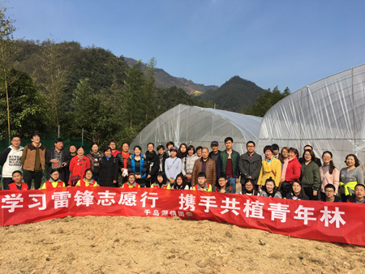

5项 重点工作
“学做创”主题教育
着眼思想引领和价值引领
学习总书记讲话，做六有大学生，创优秀团支部

改革“青马工程”
运用社群治理理念，建设国际社群将社群作为
推动团建，青年再组织化的工具和载体
建设线上线下青年之家
响应当代互联网+的时代潮流
打造网上共青团工作矩阵
打造温馨舒适富有人文关怀的线下青年之家
深化“梦想国际”品牌
加强青年学生素质拓展
继续开展形式多样、健康向上、格调高雅的文化活动
活动预览
学生干部素质提升计划
多维度培养学生干部能力
7方面 基础工作
实施第二课程成绩单制度
开展榜样教育之
“国际大人物”典型选树
拓展学生创新创业平台提升时效
加强社会实践和志愿服务的育人作用
持续并创新开展大学生三走
引导学生走出户外
畅通青年诉求表达机制,
完善特殊群体帮扶机制
整合资源，深化中外教师、中外学生、中外学校三大平台建设提升国际化校园文化环境
2017撸起袖子加油干！
*谢谢
国际学院2017年团委工作要点